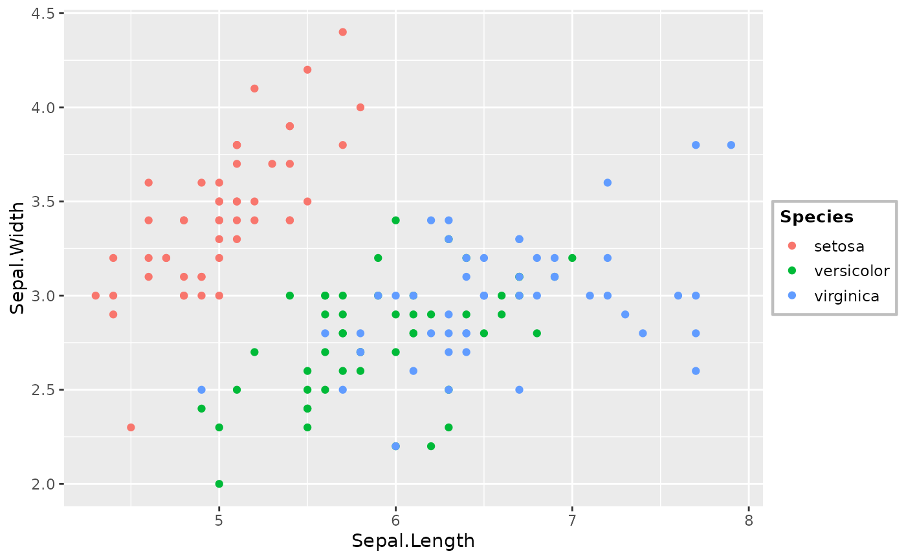
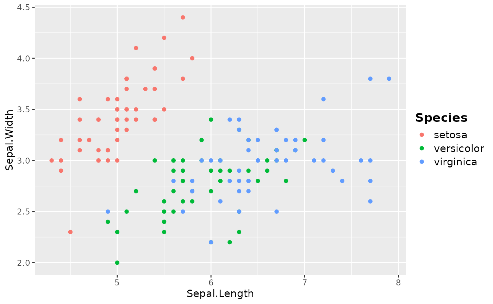
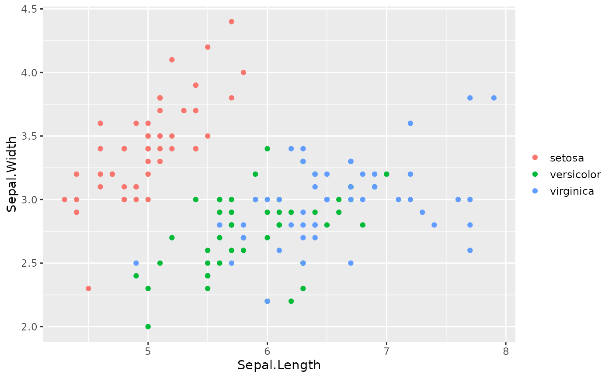
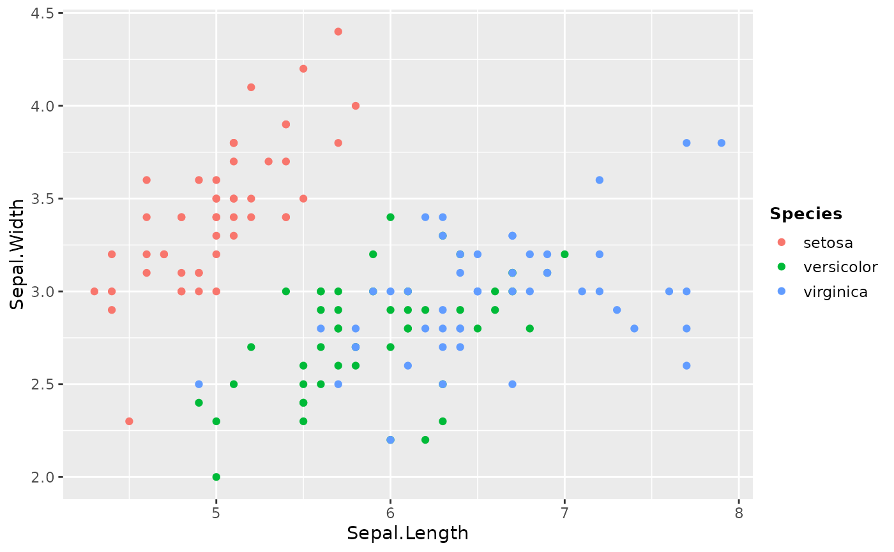

A flexible legend theme with sensible defaults. All parameters can be
overridden. [theme_legend1()] is a convenience wrapper with fixed compact
styling; use theme_legend() when you need fine-grained control.
Usage
theme_legend(
bg_fill = "white",
bg_color = "grey",
bg_linewidth = 0.8,
key_fill = "white",
key_color = NA,
key_linewidth = 0.5,
key_size = 1,
text_size = 9,
text_color = "black",
text_face = "plain",
title_size = 10,
title_color = "black",
title_face = "bold",
show_title = TRUE,
spacing = 0.2,
margin = c(4, 4, 4, 4)
)Arguments
- bg_fill
Background fill color. Default
"white".- bg_color
Background border color. Default
"grey".- bg_linewidth
Background border width. Default
0.8.- key_fill
Key background fill. Default
"white".- key_color
Key border color. Default
NA(no border).- key_linewidth
Key border width. Default
0.5.- key_size
Key size in lines. Default
1.- text_size
Legend text size. Default
9.- text_color
Legend text color. Default
"black".- text_face
Legend text font face. Default
"plain".- title_size
Legend title size. Default
10.- title_color
Legend title color. Default
"black".- title_face
Legend title font face. Default
"bold".- show_title
Logical. Show legend title? Default
TRUE. IfFALSE, title is set toelement_blank().- spacing
Spacing between legend and plot in cm. Default
0.2.- margin
Margin around legend content (top, right, bottom, left) in pt. Default
c(4, 4, 4, 4).
See also
Other ggplot2 themes:
leg1(),
leg2(),
theme_ROC(),
theme_alluvia(),
theme_blank(),
theme_heat(),
theme_km,
theme_legend1(),
theme_my(),
theme_rcs,
theme_sc(),
theme_scatter
Examples
library(ggplot2)
p <- ggplot(iris, aes(Sepal.Length, Sepal.Width, color = Species)) +
geom_point()
# Default
p + theme_legend()

# No border, larger text
p + theme_legend(bg_color = NA, text_size = 11, title_size = 13)

# No title, no background border
p + theme_legend(show_title = FALSE, bg_color = NA)

# Transparent background
p + theme_legend(bg_fill = "transparent", bg_color = NA)
